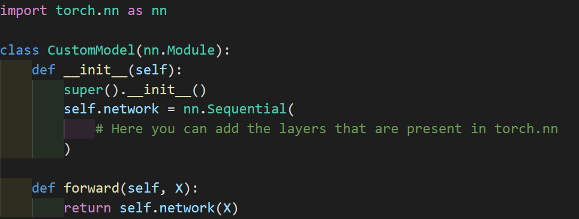
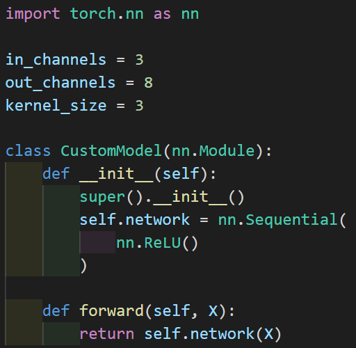
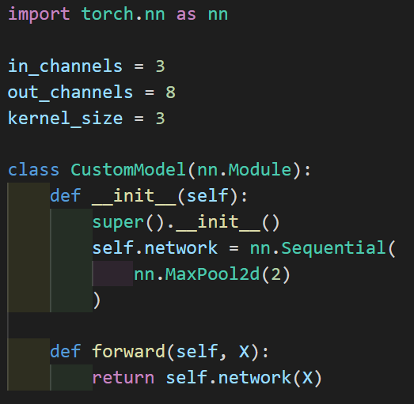
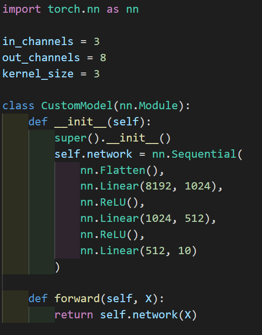
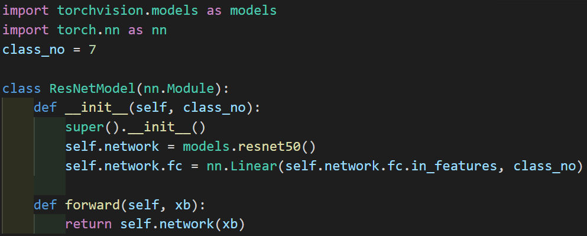

Let's make the model. There are many machine learning models out there, but this course is focused on deep learning models. First we'll start by creating our own deep neural network architecture, then we'll use ones already defined for us in the pytorch library. Please note that this course is mainly on computer vision using Pytorch and deep learning.
Custom Architecture
Here, we define a class called CustomModel, which has a network defined, though its empty.
There are many types of layers that can be added to our network, let's talk about a few:
Convolutions

How it works: you have a kernel that has weights, and this kernel slides over the input, performing elementwise multiplication with the numbers below it, then summing all that up producing an output pixel. What we get is another 2d output, though it may differ in size. Parameters that control the size of the output are the size of the kernel, the stride (how much the kernel travels over the image) and if there is any padding.

Sometimes padding is useful when applying a convolution, as it can help make our output in the desired dimensions ex: the same size as the input. Applying more than one filter can increase the number of channels. Originally, there are 3 channels for RGB, but that can change during the processing of the image.
So, what's its use? Convolutional layers act like filters, they help extract information from images. There are many types of predefined convolutions you can find, for example line detection.
An nn.Sequential model with one convoluional layer:
There is also Conv1d and Conv3d, but for images we'll use Conv2d.
After a Convolutional layer, generally there is a ReLU activation function.
ReLU

ReLU is an activation function. It introduces non-linearity in our model. Simple linear regression is used when you can draw a line through the data. Some data, however, is not linear and needs to have non-linear activation functions. ReLU takes the input numbers, if a number is bigger than 0, than it is kept as is, and if the number is 0 or less than 0, then it is replaced with 0.
Here we have a ReLU function-only model.
And after ReLU, generally there is a max-pooling layer.
Max-Pooling

These are used to decrease input size. Here we have a 4x4 input and we apply a 2x2 max-pool layer with a stride of 2 so that regions won't overlap. For each region, we take the maximum value and make a new matrix as represented by the output in the image.
Here we have a model that applies a 2x2 max-pool layer.
Repeating the Layers
This sequence: Conv, ReLU, Max-pool, is often repeated. After repeating, we flatten the layers, then we apply a linear layer on the incoming input, and apply ReLU. We then do the last 2 steps as much as we want till we have our data transformed to our desired output.
Here our output is 10 values.
Note: you can and should vary this architecture according to your needs. Heck, you could even come up with your own architecture! Though make sure that it doesn't lose the essence of deep learning.
After stacking the appropriate layers, you have your own custom model. Though we might not know how to create a good architecture, so Pytorch has a cool feature that allows us to use predefined models.
Predefined Models
Predefined models in Pytorch are architectures that we can use without creating our own. Examples include ResNets and AlexNet.
Here we use a ResNet50 model from torchvision.models. We replace the last layer because it is designed for classifying 10 image classes and set the output to be for 7 classes.
Predefined architectures have cool concepts which they introduce to computer vision, like ResNets. I advise you to read on the difference between a normal CNN and a ResNet/some other architecture and what makes a ResNet better.
Conclusion
So now that we have defined how the architecture looks like, it's time to start training.